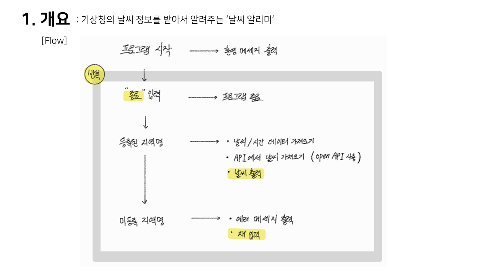
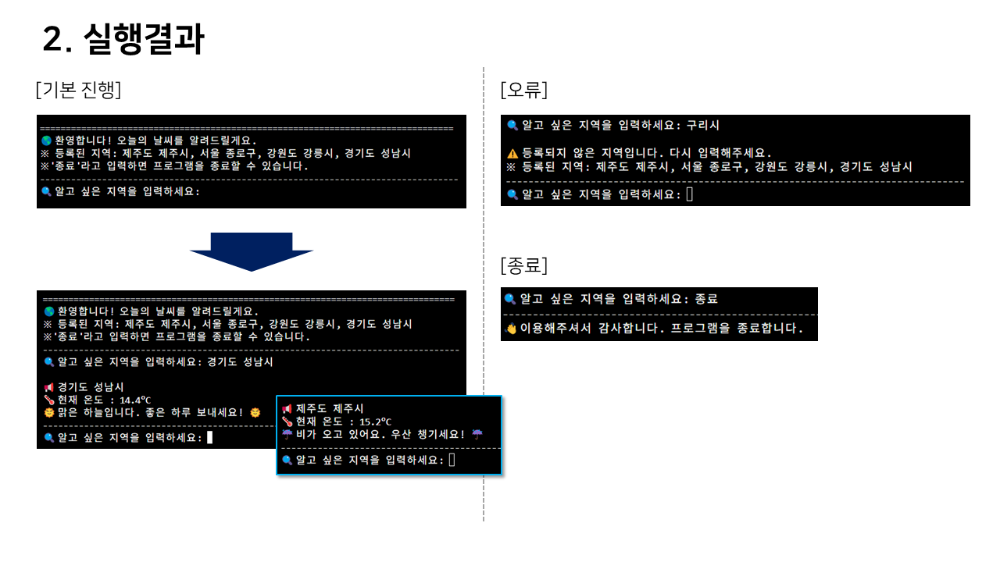
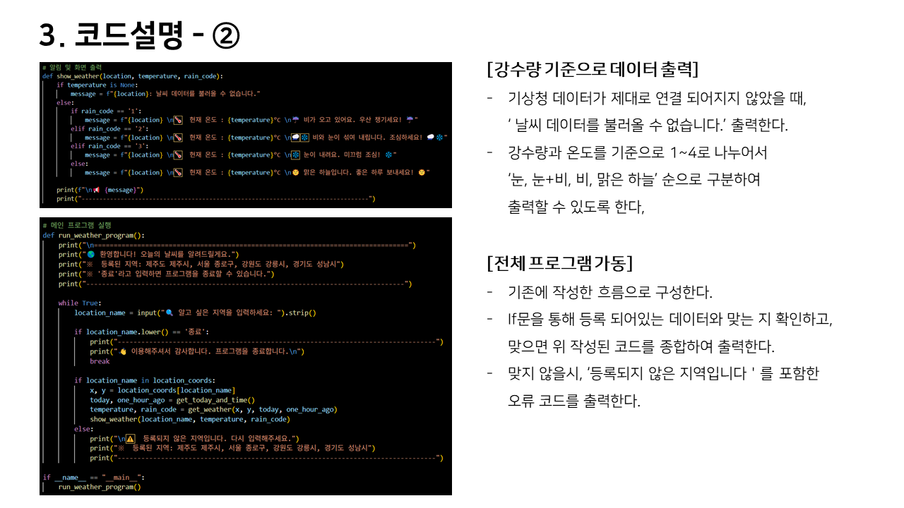

CODE ARCHIVE
디자인 설계를 실형태의 논리적 코드로 변환하고 파싱하는 프로그래밍 백엔드 기술 아카이브입니다.
PROJECT 01
Python Weather Program
PROJECT OVERVIEW (구현 결과)
기상청 오픈 API 기반 코드작업 '날씨 알리미'입니다. 사용자가 알고자 하는 지역명을 입력하면 해당 지역의 강수량과 온도를 분석하여 눈, 눈+비, 비, 맑은 하늘 등의 간결하고 직관적인 상태 메시지를 구분하여 출력해주는 콘솔형 날씨 알리미 프로그램을 완성했습니다.
ENGINE STACKS
Python 3.x
Public Open API
JSON Decoding
Exception Handling
STEP 01
아이디어의 시작 : 기획 의도
복잡하고 파편화된 기상청의 수치 날씨 정보를 사용자가 직관적이고 간단하게 확인할 수 있도록, 지역명을 검색창에 입력하면 핵심 데이터(온도, 강수 상태)만 요약 출력하는 편리한 프로그램을 구상 및 기획했습니다.
STEP 02
구현 방식 : API 데이터 제어
공공 기상청 Open API 파이프라인을 연동하고, 호출 날짜와 시간 및 조회 타겟 행정 구역의 좌표 데이터를 매핑하여 동적 Query를 요청합니다. 유저의 검색 입력값 조건에 매칭되어 등록된 정밀 날씨 정보를 정제하여 실시간으로 불러오도록 구조화했습니다.
STEP 03
예외 처리 : 안전한 흐름 제어
서버 데이터에 등록되어 있지 않은 미확인 지역명을 입력할 경우 시스템이 강제 종료되는 현상을 막기 위해, 에러 안내 팝업 피드백과 함께 현재 등록 완료된 사용 가능 지역 목록을 함께 출력하도록 설계했습니다. 아울러 '종료' 커맨드를 입력하면 무한 루프를 탈출하여 자연스럽게 끝맺도록 안전 장치를 빌드했습니다.
DEVELOPMENT SCREENSHOTS & DIAGRAMS

[이미지 01]아이디어 순서도
01. 시스템 Flow Chart

[이미지 02]API 구조 설계
02. API 데이터 파싱 레이아웃

03. Exception 필터 구동 테스트

[이미지 04]콘솔 최종 출력 화면
04. 결과 텍스트 인스턴스